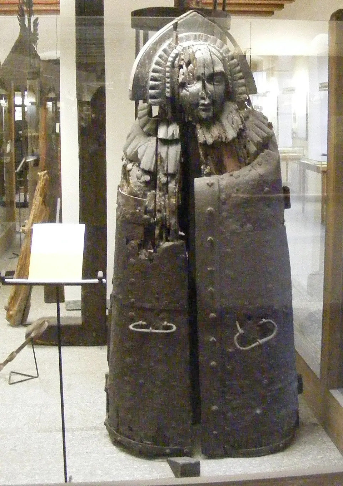
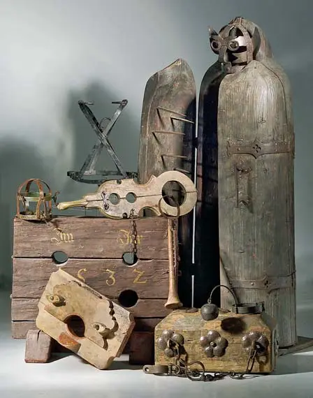
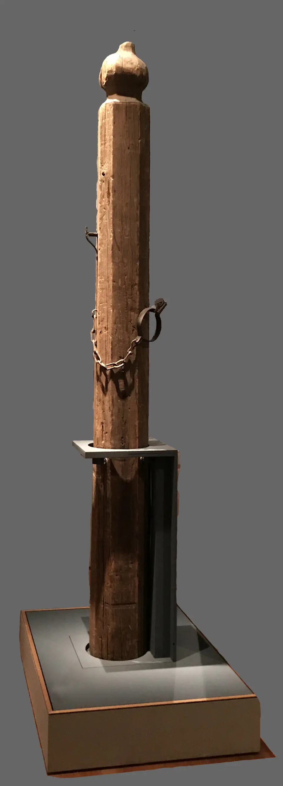
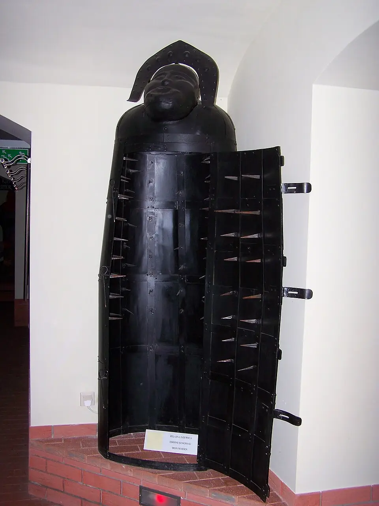

"Thiết xử nữ" có thể chưa từng tra tấn ai thời Trung Cổ
Chiếc tủ sắt đầy đinh được coi là biểu tượng tra tấn thời Trung Cổ không có trong bất kỳ nguồn Trung Cổ nào đã biết. Câu chuyện về nó xuất hiện vào thế kỷ 18.

Năm 1890, một nhà buôn ở London tên J. Ichenhauser bán cho Bá tước Shrewsbury một bộ dụng cụ tra tấn, trong đó có chiếc tủ sắt hình người lót đinh bên trong, được giới thiệu là bản sao "từ Lâu đài Hoàng gia Nuremberg". Ba năm sau, nó được trưng bày ở Hội chợ Thế giới Chicago năm 1893, rồi đi lưu diễn khắp nước Mỹ. Khách xem được bảo rằng họ đang nhìn thấy thời Trung Cổ. Nhiều khả năng họ đang nhìn thấy thế kỷ 19.
Câu chuyện của một giáo sư
"Thiết xử nữ" (iron maiden) là một chiếc tủ sắt có cửa bản lề, đủ cao để nhốt một người, mặt trong cắm đầy đinh nhọn. Theo Wikipedia, chưa có tài liệu nào trước thế kỷ 19 cho thấy nó từng được dùng.
Nhiều nhà sử học cho rằng câu chuyện bắt nguồn từ Johann Philipp Siebenkees (1759 đến 1796), giáo sư triết học và ngôn ngữ ở Đại học Altdorf. Trong một bài viết theo kiểu truyện dân gian, ông kể rằng cỗ máy này được dùng lần đầu ngày 14 tháng 8 năm 1515 để hành quyết một kẻ đúc tiền giả. Ông không dẫn nguồn đương thời nào. Khi giới nghiên cứu đi tìm bằng chứng, họ thấy chủ yếu là đồ lắp ghép.
Bằng chứng nói gì


Giáo sư luật hình sự Wolfgang Schild ở Đại học Bielefeld cho rằng các chiếc "thiết xử nữ" là đồ được lắp ghép từ những hiện vật khác nhau trong kho bảo tàng, để tạo ra những món trưng bày gây ấn tượng, có cả mục đích thương mại. Chiếc nổi tiếng nhất ở Nuremberg có thể đã được trưng bày từ khoảng năm 1802. Nó bị mất trong trận ném bom của quân Đồng minh xuống Nuremberg năm 1945.
Bản sao của Bá tước Shrewsbury thì còn. Nó được bán đấu giá đầu thập niên 1960, và nay nằm trong Bảo tàng Tội phạm Trung Cổ ở Rothenburg ob der Tauber, Đức. Nhiều chiếc khác làm vào thế kỷ 19 vẫn được trưng bày ở các bảo tàng tra tấn tại châu Âu, ở Bảo tàng Đại học Meiji ở Nhật Bản và ở bảo tàng Museum of Us ở Mỹ.
Có một chi tiết làm câu chuyện phức tạp hơn. Từ điển Oxford English Dictionary dẫn lần xuất hiện sớm nhất của cụm từ này trong cuốn du ký của Johann Georg Keyssler, in năm 1756 đến 1757, khi Siebenkees còn chưa ra đời. Đoạn văn đó viết với giọng rất hoài nghi. Như vậy, truyền thuyết có thể cũ hơn Siebenkees, nhưng vẫn chỉ là truyền thuyết. Nếu không phải từ thời Trung Cổ, ý tưởng ấy đến từ đâu?
Nó lấy cảm hứng từ đâu?


Nguồn gợi ý gần nhất có lẽ là Schandmantel, "áo choàng ô nhục" thời Trung Cổ, một dụng cụ bêu riếu người phạm lỗi làm bằng gỗ và kim loại, nhưng không có đinh. Những chiếc tủ thế kỷ 19 có thể là kết quả của việc hiểu sai món đồ này. Ở Anh có một món tương tự gọi là "áo choàng Tây Ban Nha" hay "cùm thùng", một chiếc thùng tròng qua người, chừa đầu ra ngoài, dùng để phạt kẻ say rượu.
Ý tưởng chiếc hộp đầy đinh thì cổ hơn nhiều. Tertullian và Augustine kể rằng người Carthage nhốt tướng La Mã Marcus Atilius Regulus vào một hộp gỗ chật, đóng đinh nhọn khắp các mặt. Sử gia Polybius kể về bạo chúa Nabis của Sparta, khoảng năm 200 TCN, dùng một bức tượng mang hình vợ mình, gọi là Apega sắt, để tống tiền và giết người. Còn tể tướng nhà Abbas Ibn al-Zayyat được cho là đã chế ra một chiếc rương gỗ có đinh sắt để tra tấn, và chính ông bị giam và chết trong đó năm 847.
Dư âm đến hôm nay


Thiết xử nữ trở thành hình ảnh quen thuộc trong phim, truyện và trò chơi về thời Trung Cổ. Nó nằm cạnh "quả lê đau đớn" trong danh sách những dụng cụ tra tấn "Trung Cổ" có rất ít bằng chứng sử dụng thật.
Thời Trung Cổ có tra tấn và có những hình phạt bêu riếu tàn nhẫn; nhưng chiếc tủ sắt đầy đinh nhiều khả năng là sản phẩm của trí tưởng tượng thế kỷ 18 và 19.